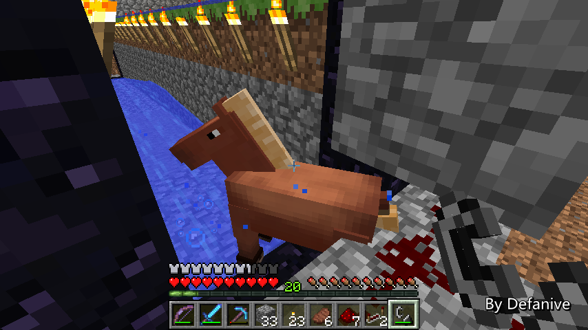

首页
上一页
263
264
265
266
267
268
268
269
270
271
272
273
下一页
末页
defanive2
无尽黑夜
14
今早的时候MCLive发不出东西，于是直播停了
现在试一下能不能发了
——来自 MCLive
21542楼
2013-08-21 12:26
defanive2
无尽黑夜
14
把周围的动物都移走之后
带上一些物品，可以准备开始造动物塔了
现在spawn chunks周围应该没有任何动物了
——来自 MCLive
21553楼
2013-08-21 12:51
defanive2
无尽黑夜
14
到了岛上，大概马克了一个位置
整个塔的中心会是在4个chunk的交接点处
这样的话一个塔会覆盖4个chunk的范围
提高刷怪速度
PS 之前又跑了一次刷怪的源码
有不少刷怪原理大家都挺少听说的
等有时间再整理一下吧
——来自 MCLive
21559楼
2013-08-21 13:03
defanive2
无尽黑夜
14
然后做出最后的收集口
16x2的大小，水流把动物往2个方向冲，送入地狱
由于动物的刷怪上限只有11
因此要在下一次刷怪前把所有刷出的动物都处理掉
选择之一可以是直接杀死
不过说不定能刷出马，所以先送到地狱门里面看看情况
——来自 MCLive
21564楼
2013-08-21 13:10
defanive2
无尽黑夜
14
水流的两翼会是多层的草地刷怪层
鉴于草地可以垂直传播
因此两翼下面的泥土也要挖掉
——来自 MCLive
21567楼
2013-08-21 13:13
defanive2
无尽黑夜
14
完成了右侧
左侧的时候铁铲坏了，只能用无附魔的石铲。。
突然就觉得整个世界都在慢动作了。。
——来自 MCLive
21572楼
2013-08-21 13:23
defanive2
无尽黑夜
14
挖完了，感觉非常不错！
这个大工程总算是有点起色了
——来自 MCLive
21574楼
2013-08-21 13:28
defanive2
无尽黑夜
14
然后就要开始铺16x8的刷怪层了
一层是128的面积，2组草地
PS 这个设计和Panda4994的设计类似
对于他那种纯刷蘑菇牛的话，我有更好的设计
不过鉴于这个动物塔的目标是刷多种动物
我的那个纯刷牛的设计就不是很好用了
——来自 MCLive
21577楼
2013-08-21 13:33
defanive2
无尽黑夜
14
建造的时候发现需要光源，不过没有带
准备回家一次
——来自 MCLive
21579楼
2013-08-21 13:42
defanive2
无尽黑夜
14
萤石储备不多了。。
晚点就去村民工程换萤石
——来自 MCLive
21581楼
2013-08-21 13:45
defanive2
无尽黑夜
14
如果要保证夜晚也能正常工作的话
每翼都要放上16个萤石
不过暂时萤石紧缺，先只放上一翼
这样白天才能正常工作，不过勉强也够用了
——来自 MCLive
21582楼
2013-08-21 13:50
defanive2
无尽黑夜
14
第一层已经做好了，不过电路还没铺
再做第二层之后，铺好电路就可以试运行了
——来自 MCLive
21583楼
2013-08-21 13:54
defanive2
无尽黑夜
14
铺好第二层的草地
——来自 MCLive
21586楼
2013-08-21 14:00
defanive2
无尽黑夜
14
2层都建好了，接下来要装收集系统的水流
收集系统就是两侧活塞控制的水流
把动物冲向中心，最后中心的水流把动物冲进地狱门
——来自 MCLive
21589楼
2013-08-21 14:10
defanive2
无尽黑夜
14
要回家取更多玻璃用了
不过在走之前先测试一下能不能刷动物
——来自 MCLive
21590楼
2013-08-21 14:11
defanive2
无尽黑夜
14
可以看到刷出了4只羊
看起来一切工作正常！
PS 按照这个速度的话，每20秒刷4只
1小时3600/20*4=720只
人工繁殖的话要到这个速度是比较困难的
而且以后多增加层数之后，目测20秒刷8只是可以达到的
——来自 MCLive
21594楼
2013-08-21 14:17
defanive2
无尽黑夜
14
2只白羊，一只灰，一只黑
——来自 MCLive
21598楼
2013-08-21 14:18
defanive2
无尽黑夜
14
正要离开的时候又刷了4只猪
效率非常不错！
目前的面积是8x16x4=512的面积
目测会把这个塔建到5层左右，达到1280的面积
由于动物刷怪上限才11，即使面积再大也没办法达到非常高
不过到20秒10只左右就非常满意了
——来自 MCLive
21603楼
2013-08-21 14:22
defanive2
无尽黑夜
14
往村民工程的路上见到的小猪人
——来自 MCLive
21604楼
2013-08-21 14:28
defanive2
无尽黑夜
14
换了一个稿子一个铲子，还有一些萤石
其实应该再换点玻璃
——来自 MCLive
21605楼
2013-08-21 14:36
defanive2
无尽黑夜
14
放好了一层的水流，刷怪时间水流是关闭的
——来自 MCLive
21608楼
2013-08-21 14:44
defanive2
无尽黑夜
14
刷怪完毕之后水流就会打开
把全部刷出的动物都冲入中心水流
——来自 MCLive
21610楼
2013-08-21 14:46
defanive2
无尽黑夜
14
接下来就要做电路系统了
——来自 MCLive
21612楼
2013-08-21 14:59
defanive2
无尽黑夜
14
在远离动物塔的地方建造一个等待点
这里会作为等待刷动物的地方，同时也是总开关
——来自 MCLive
21614楼
2013-08-21 15:05
defanive2
无尽黑夜
14
接下来就是我的设计和Panda4994不同的地方了
panda的设计是绊线检测到有蘑菇牛刷出的时候就放水
这种是非常常见的刷怪塔设计
不过动物塔也要充分利用动物塔的不同
刷动物是准时的20秒刷一次，因此绊线检测根本没有必要
只要第一次动物刷出时手动开启机器
然后让机器准确的20秒放一次水
那么就能够处理所有动物了
图中就是20秒的长脉冲
PS 25个中继器而已，不多不多
——来自 MCLive
21618楼
2013-08-21 15:16
defanive2
无尽黑夜
14
20秒脉冲连接到缩短器+非门
这样20秒的循环中，17秒的水流冲刷时间，3秒的刷怪时间
这样只要第一次启动的时候手动校准一次
这个机器就可以挂机刷动物
——来自 MCLive
21620楼
2013-08-21 15:40
defanive2
无尽黑夜
14
最后把信号都连到两边
应该可以正常工作了
——来自 MCLive
21622楼
2013-08-21 15:45
defanive2
无尽黑夜
14
接下来站到等待台上，坐等第一批动物刷出
当第一批动物刷出之后，打开拉杆
这样就和刷动物的时间同步进行了
——来自 MCLive
21623楼
2013-08-21 15:47
defanive2
无尽黑夜
14
刚刚在跟人聊天的时候刷出来了一群
不过忘记按拉杆了。。
——来自 MCLive
21628楼
2013-08-21 16:05
defanive2
无尽黑夜
14
猜猜刷出了什么！
生存模式的第一只马！
——来自 MCLive

21631楼
2013-08-21 16:15
首页
上一页
263
264
265
266
267
268
268
269
270
271
272
273
下一页
末页